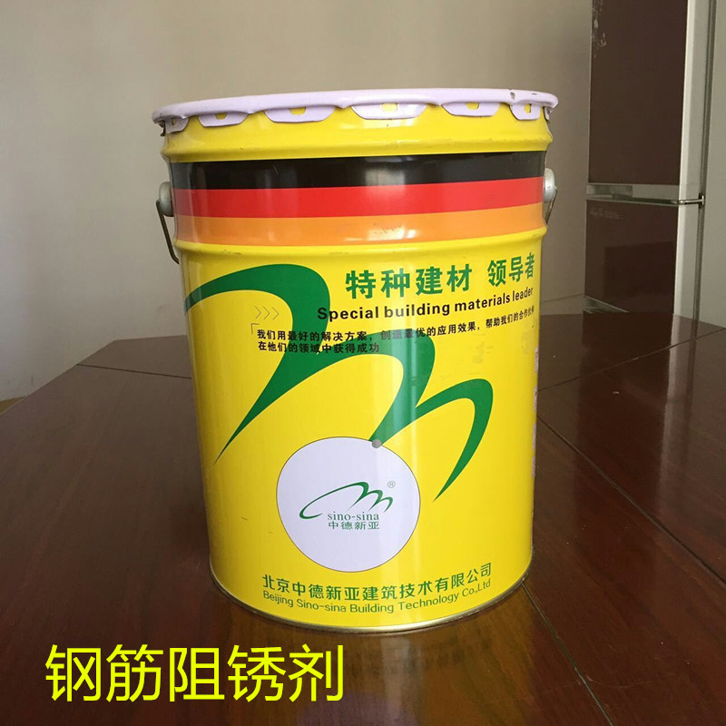
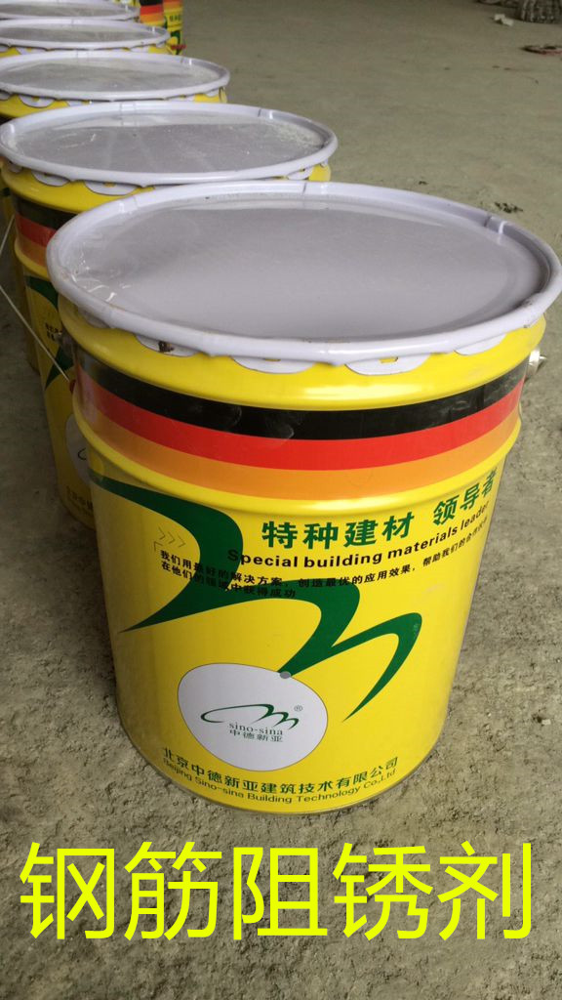

通过添加钢筋阻锈剂，它能促使钢筋表面产生一层 y-Fe2O3或Fe3O4为主要组成的氧化物钝化膜，并修补钢筋表面的缺陷，使整个钢筋被一层氧化物钝化膜所包裹，致密性稳定性很好，能阻止氯离子穿透，降低铁离子的游离速度，从而达到防锈目的。
一、产品特点
1.阻止或延缓钢筋锈蚀，从而延长结构寿命
2.显著提高混凝土的抗压强度和耐久性
3.与水泥的适应性强
4.不改变混凝土的属性
5．掺量低，性价比高
二、技术指标
| 性能 | 指标 | H-501钢筋阻锈剂 |
| 状态 | 粉剂 | |
| 钢筋阻锈性能 | 盐水浸渍 | 钢筋表面无锈蚀 |
| 盐水浸烘 | 钢筋表面无锈蚀 | |
| 掺入混凝土后的性能 | 初凝时间/min | ≥45 |
| 终凝时间/h | ≤10 | |
| 抗压强度比/%（7d） | ≥90 | |
| 抗压强度比/%（28d） | ≥100 | |
| 推荐掺量（每方混凝土胶凝材料用量%） | 轻度腐蚀环境 | 1.5-3 |
| 重度腐蚀环境 | 3-5 |
注：检验依据：YB/T9231-98《钢筋阻锈剂使用技术规程》和JG/T192-2009《钢筋阻锈剂应用技术规程》
三、适应范围
1.身处海洋环境，遭受海水及海洋大气侵蚀的海港码头、道路、桥梁、护栏等钢筋混凝土建筑物及构筑物。
2.使用海砂或其他含氧材料作骨料的钢筋混凝土。以及采用低碱水泥配制的钢筋混凝土。
3.冬季须采用除冰、除雪的钢筋混凝土桥、涵，钢筋混凝土路面及护栏等设施
4.使用海砂或其他含氯离子、除雪盐的钢筋混凝土路面、桥、涵，钢筋混凝土护栏等实施。
5.盐碱地区易受腐蚀性介质侵蚀的工业与民用建筑工程。
四、施工工艺
1．本产品可根据不同的施工要求进行添加，天骄时应适当延长混凝土的搅拌时间。
2．本品适应于通用水泥、特种水泥和粉煤灰、矿渣粉及硅灰等矿物掺合料，与常用减水剂有较好的相容性。
3.加入本品的混凝土工程，必须事先做配合比试验。
4.本品在高质量混凝土中才能更有效地发挥作用，必须遵守相关规范和设计规定，确保混凝土质量与密实性。
5.施工前应做混凝土试配，如对坍落度损失或凝结时间有一定影响时，可以通过调整混凝剂或减水剂掺量来解决。
6.本产品与常用的减水剂有较好的相容性，但不宜与酸性减水剂混合使用。
7.操作员宜配戴口罩、手套等必要的防护措施。废料、废液不得随意丢弃
五、包装贮存
1.25公斤塑料内衬牛皮纸袋包装
2.在避光、阴凉处保存。粉体保存期为1年。
3．运输及储存过程中，应严防雨淋、浸水；避免阳光直晒；远离易燃易爆物，严禁明火。
4.粉体遇有轻微吸潮结块时，可溶于水中继续使用。
该产品是一种反应型有机硅化合物，可在混凝土及石材表面形成通透保护膜，与其它成膜类保护涂料不同，混凝土保护剂并未封住矿物质表面的孔隙，而是浸入孔壁并形成一层无色透明的憎水薄膜。处理后基材不会再被水浸湿，防止因毛细管吸水作用导致的氯盐侵蚀、冻融、吸水等破坏，从而提高混凝土的耐久性及砖板石材的耐用性。
一、产品特点
•优异的渗透深度、良好的透气“呼吸”功能。
•无色透明，不改变基层的颜色和外观。
•卓越的憎水性，荷叶水珠效果。
•高耐碱性、耐紫外线。
•良好的重涂性。
二、性能指标
JGJ/T 192-2009《钢筋阻锈剂应用技术规程》
| 项 目 | 技术指标 |
| 盐水溶液中的防锈性能 | 无腐蚀发生 |
| 渗透深度 | ≥50mm |
| 电化学综合防锈性能 | 无腐蚀发生 |
三、施工工艺
1.基层处理
基材必须牢固，结构缺陷如裂缝、疏松脱落须予以处理。清除附着的油污和污染物、风化物、藻类和苔藓，这种处理打开了毛细管和孔隙，使保护剂得以吸收
2.施工说明
用刷子或滚筒进行施工。应使施工工具浸满保护剂。一般湿对湿涂刷二次，即二次涂刷应在前次涂刷面未干时进行。刚浸渍过的基材表面在5小时内应保护不受雨淋，强风和日光曝晒，这会影响保护剂的渗透深度；
3.施工温度
施工温度在10℃到25℃范围最佳。可用遮阳蓬防止在日光曝晒下表 面过热。
4.效果检验
可用Professor Karsten检测试管很容易地检验建筑物上保护剂的浸渍效果。浸渍前对吸水率进行一次检测，浸渍后14天再进行一次检测，记录检测结果以备比较。
四、包装贮存
•用量：0.2～0.5 kg/㎡
•贮存：5℃以上存于阴凉处可保存六个月
•包装：20公斤/桶
五、注意事项
•混凝土至少达到28天龄期后再使用保护剂；
•不允许在雨天及大风天使用，基层温度在5℃以下，40℃以上不得施工；
•使用时应佩戴防护镜、手套，皮肤接触时可立即用水冲洗。
北京中德新亚建筑科技有限公司
地址：陕西省西安市 高新区 丈八北路80号 爱博苑小区第4栋1单元18层
厂址：陕西省西安市户县
全国服务电话：18729360725